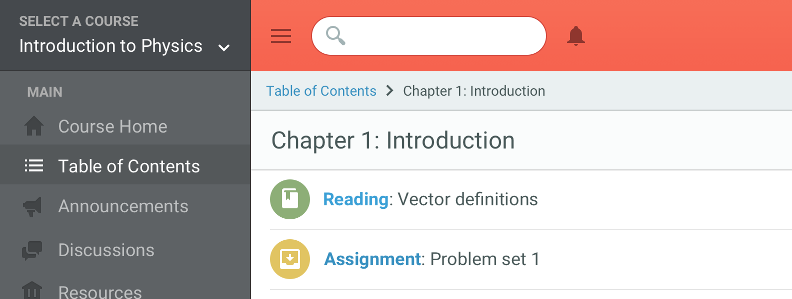

A set of free premium SVG icons for you to use on your digital products.
Showcase

Whether you’re designing a social application, a music player, a content editor or an LMS, Zondicons has every icon you will need.
Icons that you can trust for the job.
Icons play a necessary role on the user interface. They help bring meaning, provide comfort and familiarity, but also create a voice. It’s important that they are non-intrusive enough to not take away from the core experience but energetic enough to provide clarity to the user.
Zondicons have a charming yet sophisticated personality that make their use quite versatile. Their geometric shapes lend themselves nicely to any user interface whether its a playful application or a professional corporate website.
Designed for the highest of quality
Zondicons tackle some great challenges with advanced features that make them the best option for your project.
Consistency
Much like typography, icons need to behave like a family. Each icon needs to sit comfortably next to one another. The design of Zondicons takes a geometric approach with consistent proportions.
Scalability
In a world of endless screen resolutions its important to adapt to every environment. Although Zondicons were designed on a 20 pixel grid, they can be scaled to support whatever screen size you need to.
Pixel-Perfect
High performing icons should have crisp edges and smooth corners on all platforms and browsers. All Zondicons are pixel-perfect to achieve just this result.
Legibility
Zondicons were designed from a micro perspective and evaluated at a macro perspective to measure how easy it is to distinguish one icon from another.
Zondicons were designed in Ontario, Canada by Steve Schoger